Overview
In this tutorial, we will show you the process of how to set up physical interactions between the hanging leaves of a willow tree asset and any other physicalized object in the level (such as the player). To achieve this, we will be using our Merged Mesh Deform system in CRYENGINE.
Merged Mesh Deform Cloth is an improved and optimized system over the cloth entity. Through this system, it is possible to set up assets with cloth behavior as brushes and vegetation objects. In contrast to normal cloth entities in CRYENGINE, the Merged Mesh Deform Cloth has static geometry and deformable cloth geometry stored within them at the same time.
This method works great for hanging vegetation like swamp moss or willow tree leaves. But we can also imagine other purposes, like poles (static) with flags (deformable) or laundry (deformable) hanging between two poles (static).

Pic1: Merged Mesh Deform in action with a non-zero wind vector
Tutorial Files
Source Maya scene with exported CRYENGINE files:
Pre-requisites for this Tutorial
Before we continue with this tutorial, make sure to have read and understood the following:
- How to Install CryMayaTools
- The Basic CRYENGINE Maya Workflow
- CRYENGINE Exporter
- Maya Unit Scale to Match up With CRYENGINE Unit System
Preliminary Information
- Contrary to the 3ds Max tutorial part, we need to create a special export hierarchy with groups, such as empty transform nodes. It is the most challenging part of this Maya tutorial.
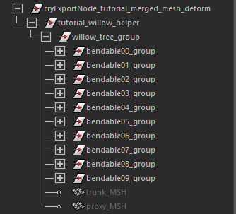
Pic2: Partly collapsed hierarchy tree of the Maya scene - For the export from Maya, you need a special parent group called <asset_name>_helper (See Pic2 above).
- The merged mesh deform geometries must follow this naming convention: "bendable##" (## are running numbers).
- The vertex color (green) channel is used to describe how much your vertices are affected by the merged mesh deform calculations.
- Keep the cloth topology irregular instead of evenly placed quads to avoid quick settlement.
- User Defined Properties need to be set up for the engine to recognize the mesh as cloth (See UDP table below).
- The SPU will calculate the nodes simultaneously in multiple threads. Up to ten nodes per object can be used to stay SPU friendly.
- Do not use too many different material IDs for the cloth nodes of your object. The cloth nodes get merged into one large single object in the engine whereas every material ID gets its own merged object. Therefore try to have as less single cloth objects as possible.
- At least one vertex colored black (RGB = 0 0 0) must be in each cloth/leaf geometry node to keep the merged mesh deforming pieces from being detached from the branches. If you see wildly stretched polygons over your merged mesh deform vegetation objects, then you missed painting some vertex black.
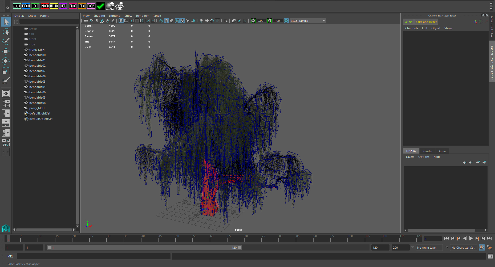
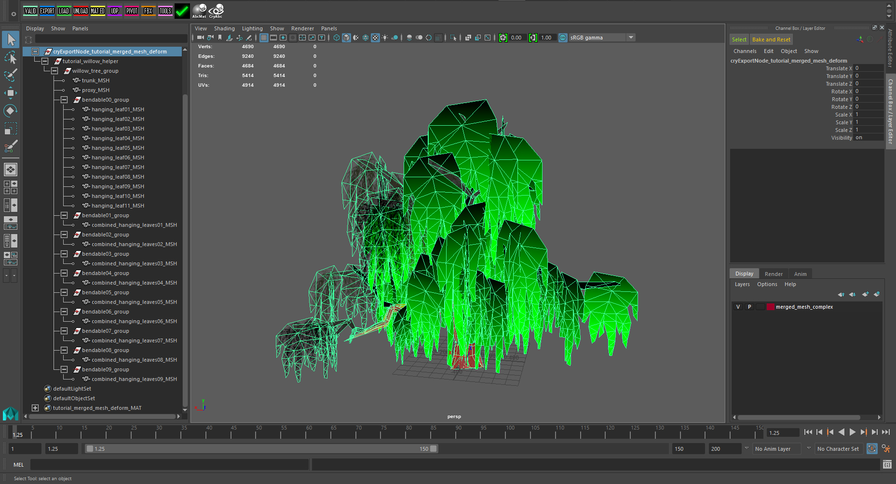
Pic3: Screen capture of the start and finished Maya scene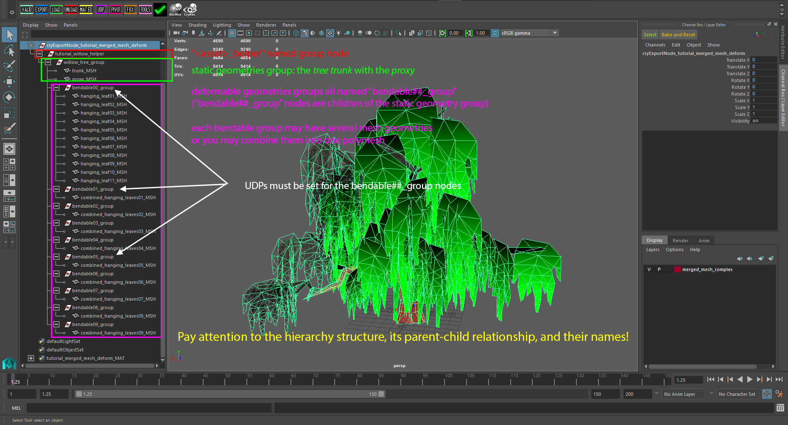
Pic3: Overview of the finished exportable hierarchy
Initial Maya setup
For this tutorial, we will create our asset in the following project directory.
<YOUR_PROJECT_FOLDER>\Assets\Objects\tutorial\vegetation\06\tree\merged_mesh_deform\maya\
(As an option, you may also start with the opening of the provided tutorial Maya scene: merged_mesh_deform_start.ma)
Save your Maya scene to this location if you haven't. All our exported CRYENGINE assets will be saved in there. Some of the textures we are using are in the former CRYENGINE GameSDK project textures folders. We will point you to the directory later in the tutorial.
We assume that you have already experience in creating/modeling simple poly geometries, since this isn't a Maya modeling tutorial. You can use the provided tree asset from this tutorial or use your own.
Material Creation
We will begin with the preparation of the assets which needs to be compatible with CRYENGINE. First step is to prepare the materials and set the User Defined Properties (UDP). We need to create an empty Material Group and add three sub-materials/shaders to it, one for the leaves (ID 01), one the tree trunk (ID 02) and the last one for the trunk collision proxy (ID 03). The order to add these three shaders are not important.
Add Material Group and include the Maya shaders
As in the previous vegetation tutorials, we must create an empty Material Group with the shelf button MAT.ED from the installed crytek shelf:
- Create a new Material Group called tutorial_merged_mesh_deform_MAT.
- Open Maya's HyperShade window and create a Phong shader and name it leaves_SUB (ID 01).
- Create a second Phong shader and name it trunk_SUB (ID 02).
- Create a third Phong shader and name it proxy_SUB (ID 03).
- Add these three Phong shader to the recently created Material Group tutorial_merged_mesh_deform_MAT.
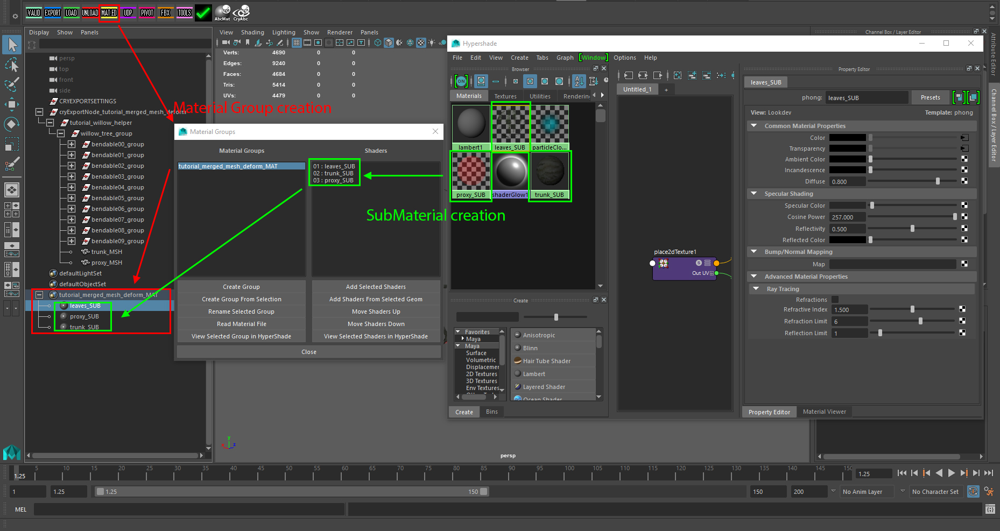
Pic4: Overview of the finished almost CRYENGINE Material Group creation
Before we continue configuring and assigning the textures file to the diffuse color and bump/normal map slots, we will first Add Attribute to the materials/shaders. This will add an Extra Attribute: Physicalize to them.
Add Physicalize Extra Attribute to Shaders
The material creation process in Maya for CRYENGINE always requires you to add the Physicalize extra attribute to the shaders. In Crytek shelf open the Export Tool, with your shaders selected, please click on the Add Attribute button.
Remember that you won't get any feedback by the Add Attribute button. You have to check the Extra Attribute section of the Maya shader/material with the Maya's Attribute Editor.
Repeat the above step for the other three sub-materials/shaders.
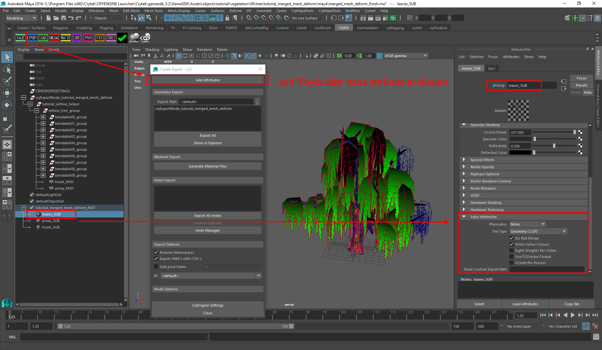
Pic5: "Add Attribute" to add Physicalize extra attribute to the shaders
Next we will set the Physicalize attribute of the three sub-materials/shaders and assign the texture maps to their diffuse and bump/normal map slots.
leaves_SUB shader setup
Select the leaves sub-material/shader (ID 01).
The example file refers to the following provided tutorial textures:
- <YOUR_PROJECT_FOLDER>\Assets\Objects\tutorial\vegetation\06\tree\merged_mesh_deform\maya\tutorial_merged_mesh_deform_leaves_diff.tif>
- <YOUR_PROJECT_FOLDER>\Assets\Objects\tutorial\vegetation\06\tree\merged_mesh_deform\maya\tutorial_merged_mesh_deform_leaves_ddna.tif>
Add the diffuse texture file to the diffuse color slot and the *.ddna normal map to the bump map slot of the leaves_SUB Phong shader. The diffuse map should contain an alpha map for the opacity. The normal map should also contain an alpha map for the PBS smoothness value.
- Open Maya's Attribute Editor (CTRL-A).
- Select the leaves_SUB shader by using the Outliner or HyperShade.
- In the Extra Attribute section, for the Physicalize attribute, use the dropdown list to select None.
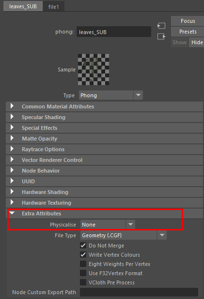
Pic6: Physicalize attribute of leaves_SUB shader
trunk_SUB shader setup
Select the trunk_SUB sub-material/shader (ID 02).
The example file refers to the following provided tutorial textures:
<YOUR_PROJECT_FOLDER>\Assets\Objects\tutorial\vegetation\06\tree\merged_mesh_deform\maya\tutorial_merged_mesh_deform_trunk_diff.tif><YOUR_PROJECT_FOLDER>\Assets\Objects\tutorial\vegetation\06\tree\merged_mesh_deform\maya\tutorial_merged_mesh_deform_trunk_ddna.tif>
Add the diffuse texture file to the diffuse color slot and the *.ddna normal map to the bump map slot of the trunk_SUB Phong shader. The diffuse map should contain an alpha map for the opacity. The normal map should also contain an alpha map for the PBS smoothness value.
- Open Maya's Attribute Editor (CTRL-A). Select the trunk_SUB shader by using, e.g. the Outliner or HyperShade.
- In the Extra Attribute section, for the Physicalize attribute, use the dropdown list to select None.
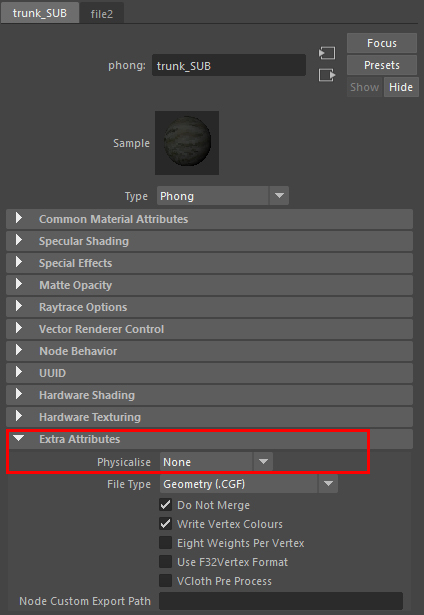
Pic7: Physicalize attribute of trunk_SUB shader
proxy_SUB shader setup
Select the proxy_SUB sub-material/shader (ID 03).
- Open Maya's Attribute Editor (CTRL-A). Select the proxy_SUB shader by using, e.g. the Outliner or HyperShade.
- In the Extra Attribute section, for the Physicalize attribute, use the dropdown list to select ProxyNoDraw.
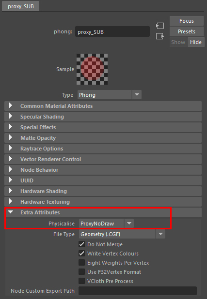
Pic8: Physicalize attribute of proxy_SUB shader
Set the transparency color to a light red, so you can spot your proxy object on top of the actual geometry better.
CRYENGINE *.MTL material file export
As the material setup is independent of the rest of the scene, we can already export the current work-in-progress material to CRYENGINE. We will finish this set up in the next tutorial section. But for now:
- Open the Maya to CRYENGINE exporter by accessing the Crytek shelf and clicking on the Export button.
- In the popped up CRYENGINE Exporter window, click the Generate Material Files button. This will save the material group to an *.MTL file into the project directory you set initially.
<Your_Project>\Assets\Objects\tutorial\vegetation\06\tree\merged_mesh_deform\maya\tutorial_merged_mesh_deform_MAT.mtl
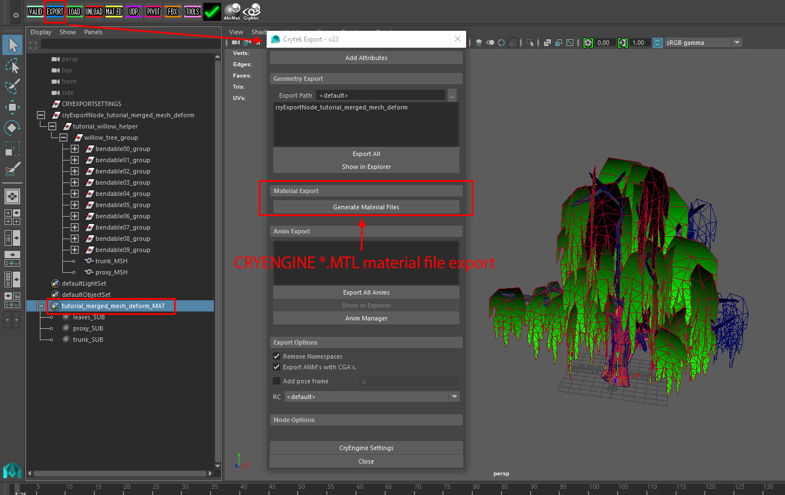
Pic9: material export from Maya
Geometry
To remind you of the important aspects of creating merged mesh deform vegetation for CRYENGINE:
Key to merged mesh deform exported from Maya are these elements:
- The export hierarchy is set up correctly. See Pic1 and Pic2 at the beginning of this tutorial.
- The deformable group nodes must be named bendable##_group, for example, bendable01_group or bendable02_group, etc. The names of the actual polymesh node, which must stay as child of the bendable groups, can be chosen freely.
- UDPs for merged mesh deform are set for the bendable##_group nodes.
- Apply vertex coloring with at least one vertex painted black for each polymesh piece for it to stay in place.
- 3ds Max and Maya require a different approach to set up a working exportable merged mesh deform asset.
Our geometry for this tutorial is going to be a willow tree. With its hanging leaves this type of tree is perfect for showcasing cloth-like physics on an otherwise static object. For this feature to work, we have to model these geometries:
- Static willow tree trunk
- Deformable leaf polymesh pieces
- Collision proxy mesh
And place the upper three geometry types into a correctly set export hierarchy.
Now let's advance to tweak these geometries.
Trunk, its collision proxy mesh and their export hierarchy
We start with the tree trunk polymesh. But instead of going into details, we assume you to use either the provided Maya scene and skip to the end of this modeling process. If you created a tree trunk yourself, please add a clean UV layout for it. Use any UV editing tools Maya internal or external programs.
- Apply the trunk_SUB shader from the material setup section above to the trunk geometry.
- Model a collision proxy mesh for the trunk, Apply the previously created proxy_SUB shader to it.
- Follow the lower Pic10 screenshot to create the group nodes for the trunk and proxy.
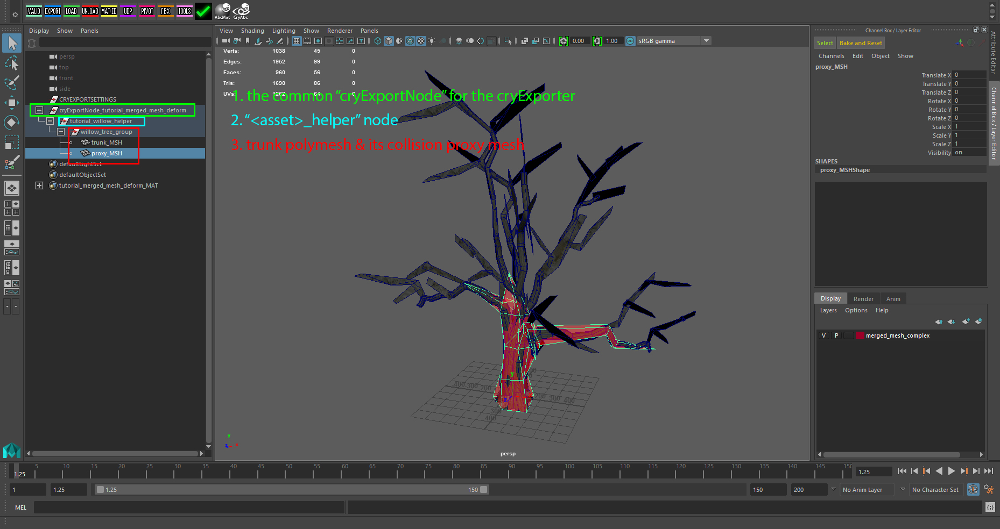
Pic10: Geometry of the trunk and its proxy already set into the export hierarchy.
Leaves geometry and their "bendable##" groups
Now let's concentrate on the creation of the leaves.
- Model some poly planes for the leaves and keep the texture that you want to use in mind. The leaves geometry should resemble the leaf texture in shape. Use the alpha channel of the diffuse map to define the leaves and twigs area. By doing this, we can avoid to using too many polygons to define the leaves shape. Make some model and texture variations. In the provided Maya scene, we have roughly three leaf types for the whole tree.
- Do not populate the trunk with the leaf variations yet. We must first apply some vertex paint in the next section.
- Assign the leaves poly planes the leaves_SUB shader.
- Create an empty group node (CTRL-G with nothing selected) and name it bendable00_group and parent the leaves under this group. You can add more bendable groups later.
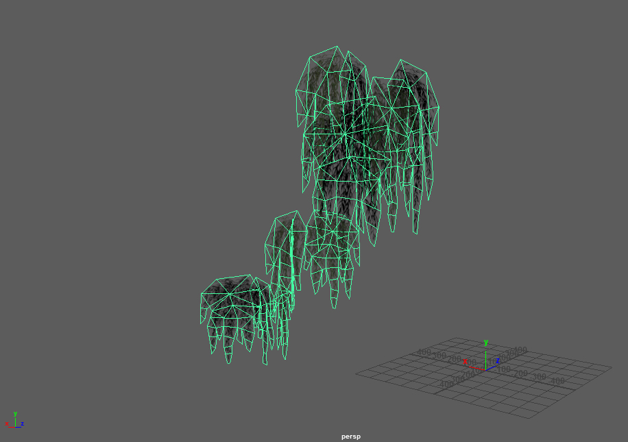
Pic11: Geometry of all three tree leaf patches under the bendalbe00_group
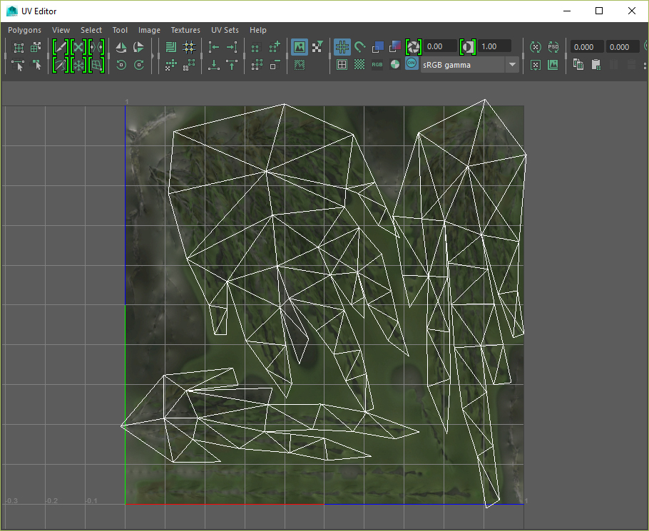
Pic12: UV layout of the leaves in Maya's UV Editor.
The leaf UVs in the above image should match the underlying texture.
Apply Vertex Color to the leaves geometry
Before we continue creating the rest of the tree by duplicating and distributing the leaves, we will add vertex color to them.
As stated before, you may use a black to white gradient to mark the intensity of the cloth physics effect (black 0%, white 100% intensity). But we use just the green channel and leave the red and blue for other vegetation deformation effect which you may have learned from the previous vegetation tutorials.
In Maya, press F-2 to switch to the Modeling menu, and then go to Mesh Display->Apply Color or Mesh Display->Paint Vertex Color Tool.
With the leaf geometries selected, go to the Paint Tool, and flood the Vertex Color channel of the mesh vertices with 100% green. Now set the color to black and paint the vertices, which should stay connected to the branches of the willow tree. See the below image for results.
Press and hold B key with mouse dragging to the left or right to increase the brush size.
Remember: Maya's Paint Tool only activates if you have paintable geometry selected.
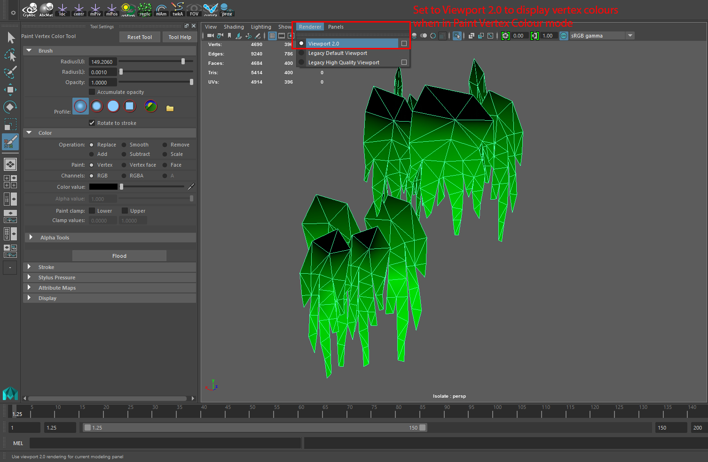
Pic13: Adding vertex color to the leaves
Merging multiple UV sets after applying Vertex Paint
You cannot export multiple UV, since this is not supported by CRYENGINE. You may come into this situation, after you imported a vertex painted mesh from FBX or applied vertex colors. You have to collapse multiple UV sets into the Maya default map1 UV set.
Beware: Handling of multiple UV sets in Maya's UV Editor is never easy. Save the project before you continue. You can also use Maya's UV Set Editor in the Maya's Modeling menu: UV->UV Set Editor to get rid of non-default UV sets after copying them to the default UV set map1.
map1 UV sets cannot be deleted since it is the default UV set for the object.
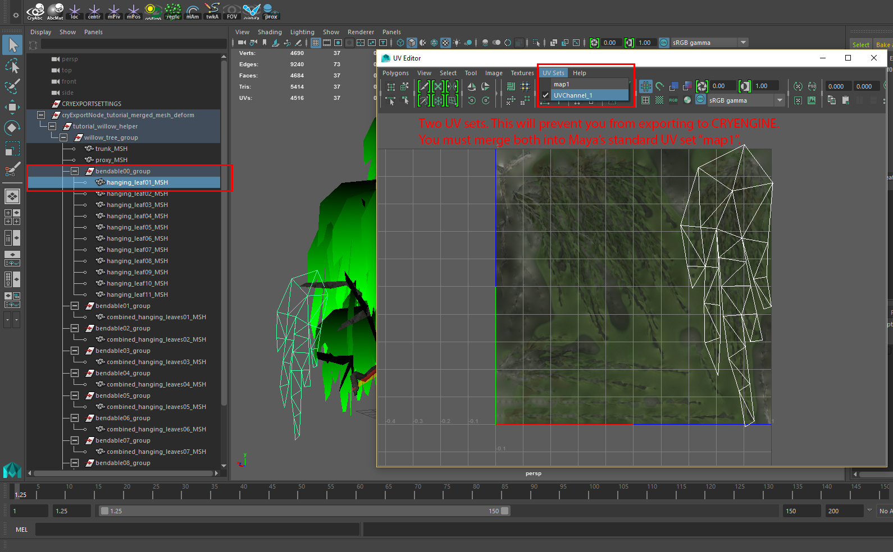
Pic14: Verifying the multiple UV sets.
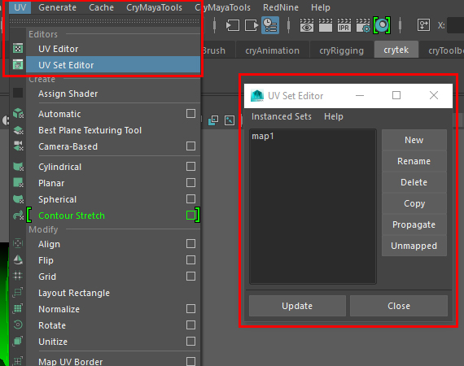
Pic14a: UV Set Editor
Now let us collapse (copy and paste) the UV sets back into one. The goal is to select and copy the UVs for each UV set and paste them into the default map1.
After that purge/delete all the empty UV sets with UV Set Editor.
- Open the Maya's UV Editor (if you haven't already) by going to the Maya menu: Windows->UV Editor.
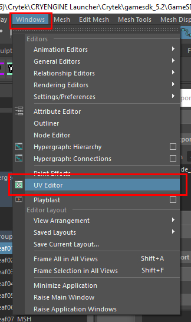
Pic15: Maya's UV Editor - Select a single leaf geometry piece.
- Go to the UV Editor menu, and select the UV Sets and activate the one UV set that is not named map1. If you have more than 2 UV sets, please activate only one for the time being. You'll have to repeat the step 2 to activate others.
- Check if you have a UV layout drawn in UV Editor.
a: If no UVs are drawn and this is not the Maya's default map1 UV set, please delete this UV set by going to the UV Set Editor (NOT the UV Editor) and press the Delete button for the selected UV set.
b: If yes, you will see a UV Layout and select the UVs in UV Editor. Right-click and drag the UVs to the right to set to the UV selection mode. - Click and drag a rectangle to select all UVs.
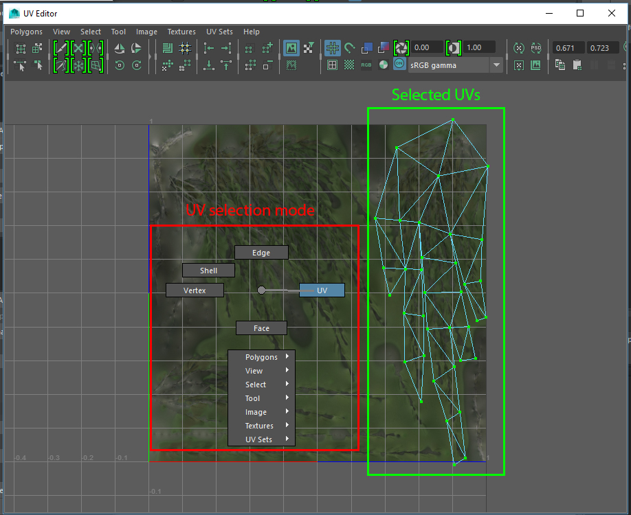
Pic16: UV selection mode - Now go to UV Editor menu: Polygons->Copy UVs to UV Set->map1 to copy and paste the selected UVs to the default map1 UV set.
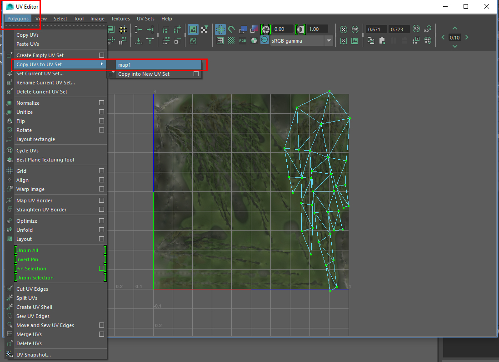
Pic17: Copy and Paste UVs - Repeat the steps 2 to 5 for the other non-empty UV sets. Delete the copied or any empty UV sets with UV Set Editor (if any left).
This process is quite annoying and should be done by scripting. Perhaps you can ask your Technical Artist for this task.
User Defined Properties for merged mesh deform assets
In order to activate the merged mesh deform system, we are still missing the UDP setup part. In Maya, you can set this by adding UDP to the Extra Attribute section by using the UDP shelf button from the Crytek shelf.
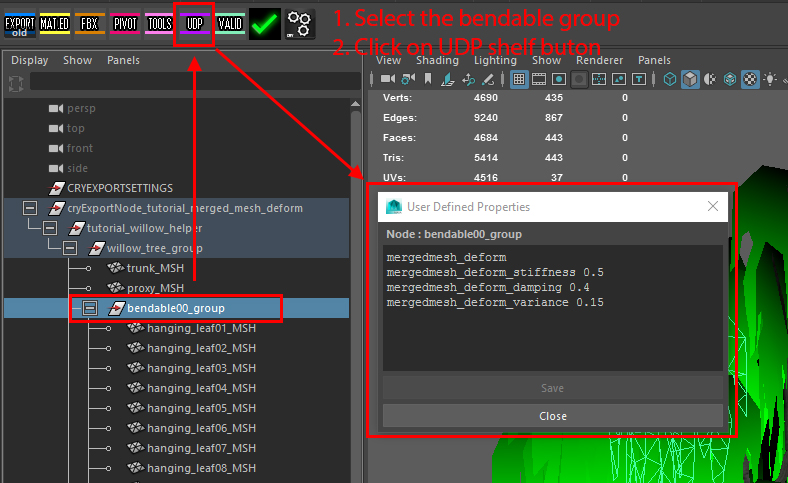
Pic18: UDP window for activating mergedmesh_deform
As shown in Pic18 above, you must at least type mergedmesh_deform into the UDP window and then click the Save button.
These are the available parameters used to define merged mesh deformable geometries:
UDP | Description |
|---|---|
mergedmesh_deform | Required to enable mergedmesh deform cloth physics for this node. |
mergedmesh_deform_stiffness | Defines how stiff the deformable is, between 0.0 and 1.0. |
mergedmesh_deform_damping | Controls how quickly the deformable will settle, between 0.0 and infinity. |
mergedmesh_deform_variance | Controls how much randomness is in the wind sampling algorithm, between 0.0 and infinity. |
mergedmesh_deform_air_resistance | Scales the wind influence, multiplied with the levels wind force. |
mergedmesh_deform_air_frequency | Cosines modulated speed of wind per vertex, between 0.0 and infinity. |
mergedmesh_deform_air_modulation | Cosines modulated speed of wind per wind-force, between 0.0 and infinity. |
mergedmesh_deform_max_iter | Amount of simulation iterations, between 1 and 12, 3 is default, the higher the more expensive. |
Repeat the UDP setup for all bendable##group nodes after you duplicated the leaf geometries and parent them under a bendable group node.
Organizing the duplicated leaves into bendable##group nodes
The leaves need to be scattered around the tree trunk branches. You may combine the geometries (Don't forget to Delete History) or you can just parent these under the bendable group. This was demonstrated for the bendable00_group. The other bendable group nodes are combined mesh pieces. But don't go overboard with using bendables group nodes. Maximum of ten should suffice and you will not get a performance drop by SPU bottleneck.
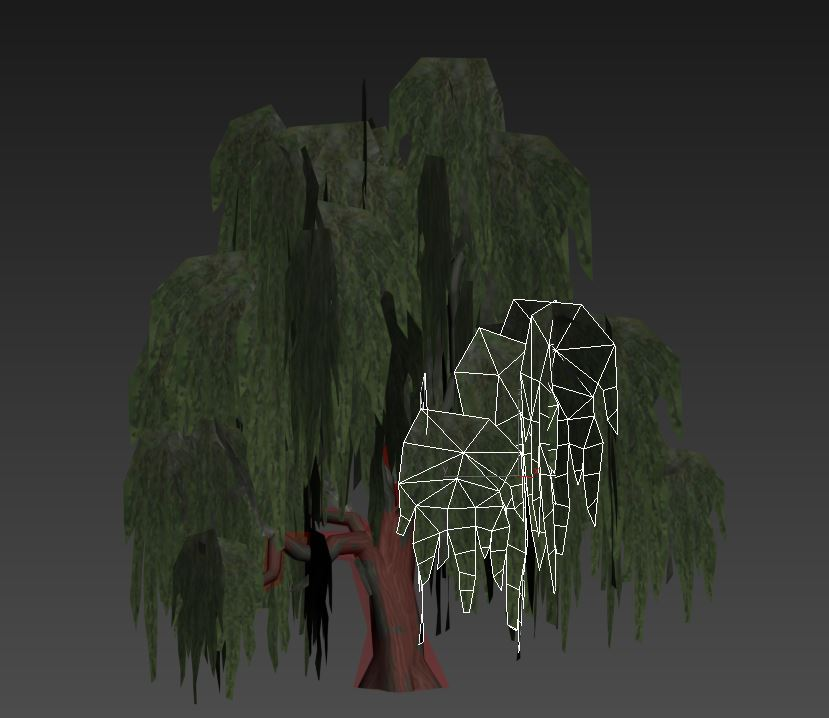
Pic19: Merged leaf patches together with trunk
Hierarchy setup
Now it is time to reorganize all the mesh node and transform/group nodes under a cryExportNode. See the lower pictures for reference, and open the provided final Maya scene and examine the hierarchy there: merged_mesh_deform_finish.ma
Pic20: Final exportable hierarchy
Export the Geometry
We are now ready to export our geometry to the engine. On Crytek shelf, click the Export button to open Maya to CRYENGINE exporter:
- It should automatically recognize any transform starting with cryExportNode_* string and add it to the export list.
- Select Geometry (*.cgf) from the Export format dropdown list if not already done. To export to *.cgf is the default behavior. So, mostly you don't have to change anything.
- Press the Export Selection/Export All button. You may want to press the Generate Material Files button if you haven't done it in the Material setup section above.
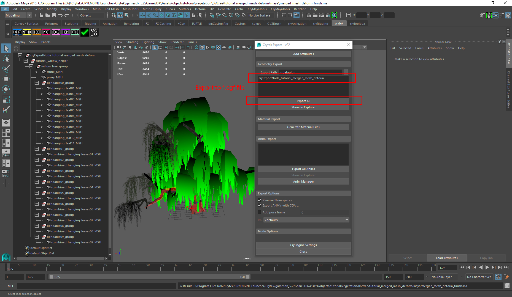
Pic21: Ready to export the geometry files.
Further Pitfalls
- Avoid non-unique names in Maya.
- Multiple UV sets: Copy and paste all UVs into one UV set (default map1) and delete the other UV sets.
- Check the export hierarchy and its naming.
- Name the group node after the cryExportNode_<CE_ASSET_FILE> as <YOUR_ASSET_NAME>_helper, since we have to add more than one group node.
- Avoid giving the same name to the <PREFIX>_helper node and any <PREFIX>_group node of your export hierarchy, for example willow_tree_helper and willow_tree_group.
Continue to CRYENGINE
We have finished the setup for the Maya portion of the tutorial. To continue move to the next page where we configure the material and use the Vegetation Editor to paint some of these merged mesh deform assets.